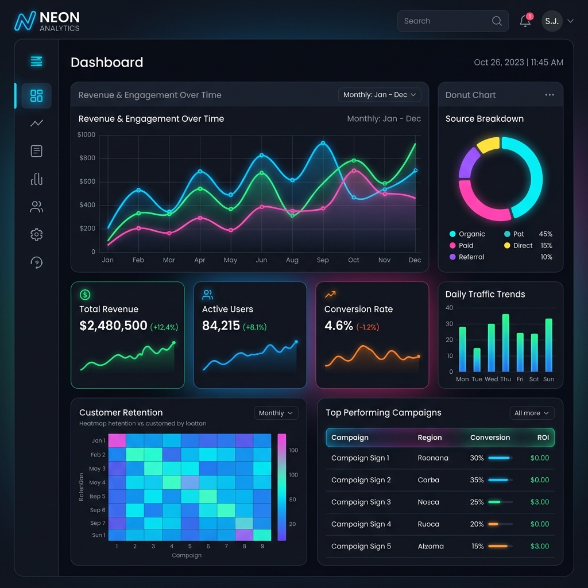

Data/IA Jobs Tracker
Un pipeline ETL complet de données conçu pour analyser en temps réel le marché de l'emploi en Data et en Intelligence Artificielle en France. Le projet intègre de la collecte de données, du nettoyage de données complexes et une double visualisation (Dashboard Web & Power BI).
Architecture & Pipeline de Données
- Collecte (Scraping - collect.py) : Script d'extraction automatisé des offres via BeautifulSoup (scraping HTML). Intègre un moteur de génération réaliste (1200+ offres) en cas de blocage CORS/sécurité.
- Nettoyage & Agrégation (analyze.py) : Pipeline utilisant Pandas et NumPy. Standardisation des salaires (gestion des TJM, salaires bruts annuels et mensuels), extraction automatique des mots-clés de technologies (Python, SQL, PyTorch, Docker...), nettoyage des localisations et exports structurés.
- Fichiers de Sortie : Export de
cleaned_jobs.csvpour le reporting décisionnel, et injection directe dansdashboard_data.jspour alimenter le dashboard web sans requérir de backend de base de données.
Visualisations & Rapports
Le projet met en œuvre deux méthodes complémentaires de mise en valeur des données :
- Dashboard Web Interactif : Interface dynamique en Chart.js permettant de filtrer instantanément par Ville, Rôle et Contrat avec recalcul instantané des KPIs (Moyenne de salaire brut, offres totales, technologies clés).
- Tableau de bord Power BI : Guide de conception pour modéliser le fichier CSV extrait sous Power BI Desktop afin d'analyser l'attractivité géographique et salariale en entreprise.
Démo & Fichiers
Accédez directement au tableau de bord dynamique et aux jeux de données générés par le pipeline Python :
